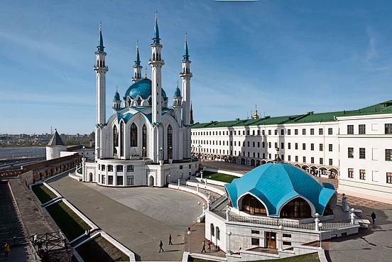
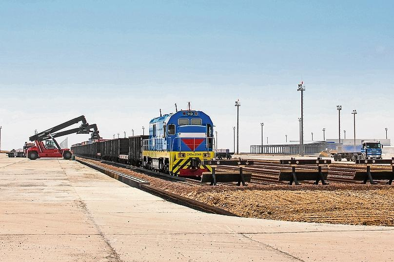
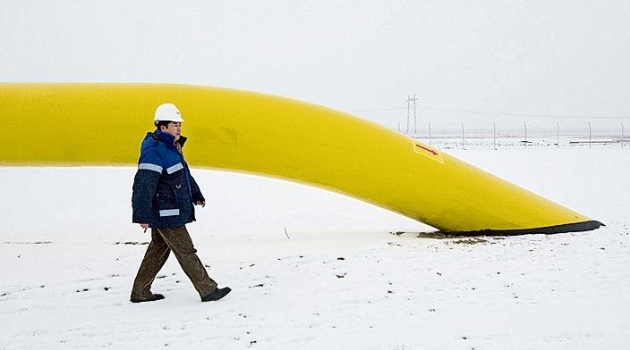
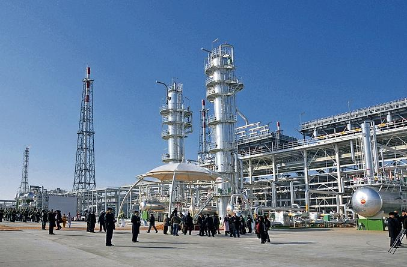
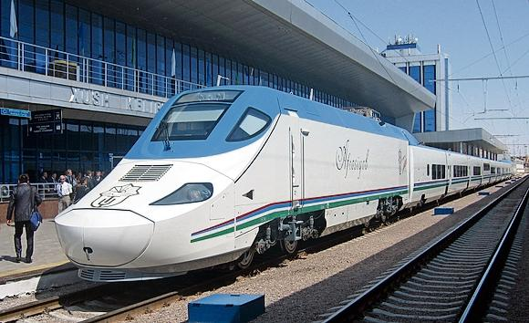
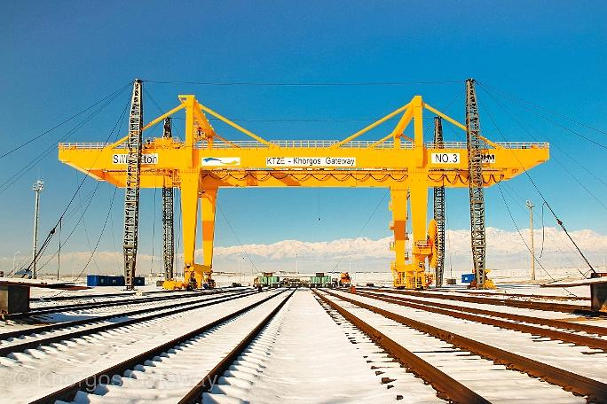
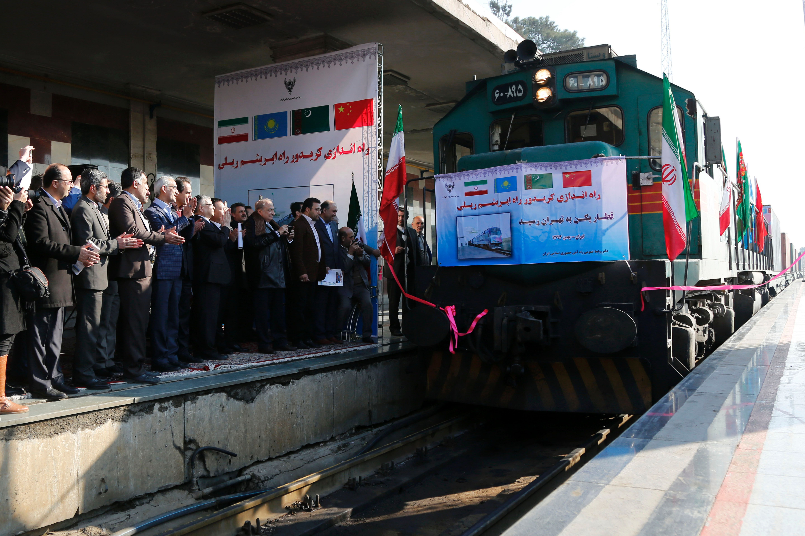
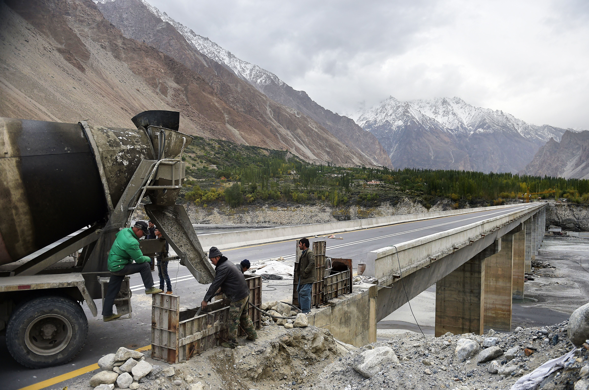

China’s “One Belt, One Road” project aims to make central Asia more connected to the world, yet even before the initiative was formally announced China had helped to redraw the energy map of the region. It had built an oil pipeline from Kazakhstan, a gas pipeline that allowed Turkmenistan to break its dependence on dealings with Russia and another pipeline that has increased the flow of Russian oil to China.
Chinese companies have funded and built roads, bridges and tunnels across the region. A ribbon of fresh projects, such as the Khorgos “dry port” on the Kazakh-Chinese border and a railway link connecting Kazakhstan with Iran, is helping increase trade across central Asia.
China is not the only investor in central Asian connectivity. Multilateral financial institutions, such as the Asian Development Bank, the European Bank for Reconstruction and Development and the World Bank have long been investing in the region’s infrastructure. The Kazakh government has its own $9bn stimulus plan, directing money from its sovereign wealth fund to infrastructure investment. Other countries, including Turkey, the US, and the EU have also made improving Eurasian connectivity a part of their foreign policy.
Moscow-Kazan high-speed railway

A China-led consortium last year won a $375m contract to build a 770km high-speed railway line between Moscow and Kazan. Total investment in the project — set to cut journey time between the cities from 12 hours to 3.5 hours — is some $16.7bn.
Khorgos-Aktau railway

In May last year, Kazakhstan’s President Nursultan Nazarbayev announced a plan to build — with China — a railway from Khorgos on the Chinese border to the Caspian Sea port of Aktau. The scheme dovetails with a $2.7bn Kazakh project to modernise its locomotives and freight and passenger cars and repair 450 miles of rail.
Central Asia-China gas pipeline

The 3,666km Central Asia-China gas pipeline predated the new Silk Road but forms the backbone of infrastructure connections between Turkmenistan and China. Chinese-built, it runs from the Turkmenistan/Uzbekistan border to Jingbian in China and cost $7.3bn.
Central Asia-China gas pipeline, line D

China signed agreements with Uzbekistan, Tajikistan and Kyrgyzstan to build a fourth line of the central Asia-China gas pipeline in September 2013. Line D is expected to raise Turkmenistan’s gas export capacity to China from 55bn cu m per year to 85bn cu m.
China-Kyrgyzstan-Uzbekistan railway

Kyrgyzstan’s prime minister Temir Sariev has said that the construction of the delayed Kyrgyz leg of the China-Kyrgyzstan-Uzbekistan railway would start in 2016. In September 2015, Uzbekistan said it had finished 104km of the 129km Uzbek stretch of the railway.
Khorgos Gateway

Khorgos Gateway, a dry port on the China-Kazakh border that is seen as a key cargo hub on the new Silk Road, began operations in August 2015. China’s Jiangsu province has agreed to invest more than $600m over five years to build logistics and industrial zones around Khorgos.
Trans-Asian railways

Whether transporting frozen poultry or electronic equipment, subsidies from China are making new overland train routes across central Asia an increasingly attractive proposition for logistics businesses. Cheaper than by air, and faster than by sea, increased overland rail networks could help the region capture valuable business and capitalise on increased trade from China to Europe through overland routes across Belarus, Russia and Kazakhstan.
Rail connection to Tehran

The first freight train from China arrived in Tehran in February 2016 in the wake of China’s One Belt One Road project which has seen ongoing investment in overland rail across central Asia. This, plus Iran’s landmark nuclear agreement with the west in 2015, has paved the way for deals with France and Germany for a much-needed modernisation of the country’s railway network and provided a boost to Chinese-Iranian trade.
China-Pakistan highway

Concerns over what China’s new Silk Road project will mean for India are concentrated around Chinese plans to invest $46bn in a new "economic corridor" between China and Pakistan. The initiative will pass through the disputed region of Kashmir and Indian policy analysts remain divided on whether the project is a strategic threat or an economic opportunity for their country.